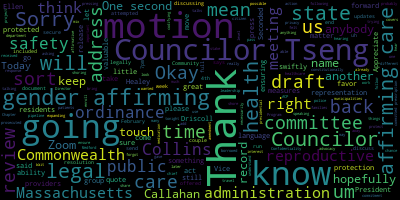
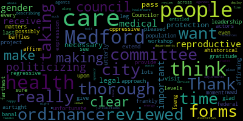
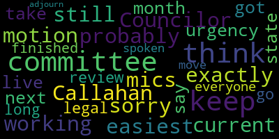

[Epstein]: Test one, two.
[Lazzaro]: This is the Public Health and Community Safety Committee, February 4th, 7pm, 730, 727. Thank you for being here. Today we are going to discuss, offered by Councilor Tseng and Councilor Collins, the resolution to draft an ordinance to secure the rights to gender affirming care. We will also be discussing um, reproductive health care in this ordinance. Um, I have a couple of updates. We, uh, attempted to run this by our legal representation before today, but they did. They let us know they wouldn't have had time to review the document before this meeting. They said by the end of this week, they can get a full review back to us. So what they did send me was, um, A little, what it was, was a press release from the Healey-Driscoll administration that included this quote. It says, in Massachusetts, gender-affirming health care is a legally and constitutionally protected right. The Healey-Driscoll administration is committed to ensuring the protection of that right, both for Massachusetts residents and those who travel to the Commonwealth for care. Chapter 127 of the Acts of 2022, an act expanding protections for reproductive and gender affirming care, codifying these measures, ensuring the Commonwealth's ability to protect patients from out-of-state legal action. It also gave gender-affirming care providers the ability to enroll in the Commonwealth's Address Confidentiality Program, ACP, to ensure privacy and safety for their families. This was a press release from 2023 that had many quotes from different leadership at the state level affirming the state's commitment to gender-affirming care. gender-affirming care, reproductive health care, safety in Massachusetts. That being said, we still felt it was valuable and important to bring this forward. During this presidential administration, we're not sure of anything. We're not sure how things could go and shoring up what our residents are asking us to shore up is valuable, we think. We've been hearing from some citizen advocacy groups and we're going to follow through with those measures and this ordinance was already in the pipeline. We've been talking about it for a little while. So we have a draft that you all received and hopefully you had a chance to look it over. It covers, you know, some language that was borrowed from other municipalities that sort of talks about, you know, these sorts of healthcare providers will be protected in Medford and not, you know, prosecuted or, um. That sort of like that sort of language. So if anybody if sorry, but I've been speaking so much because this is really Councilor Tseng this project, so I will let you take it away. Thank you. Wait one second. I'm sorry. I forgot how to use the mix.
[Tseng]: No worries.
[Lazzaro]: One second. One second. I touch it and then I touch what? Touch it.
[Epstein]: Then you push mic live. There we go.
[Tseng]: Thank you, Chair Lazzaro. I think you put it very well, why we're doing this. You know, we're hearing from residents that they're worried about what's happening nationally. And they've been worried since the Dobbs decision years ago, that really put reproductive health care at stake. You know, I think residents know that Massachusetts is a state where we do believe very strongly and affirmatively in women's rights in rights of, you know, our youth to get the care that they need in the rights of doctors to make the best recommendations that they can for their patients. You know, with that being said, we also don't want Medford to be the site of conflict, right? We don't want Medford to be where hospitals, you know, that provide this type of care are, you know, having to give up their doctors or having to give up their patients to police that's not from Massachusetts, you know, and putting their patients and their employees at risk. And there have been a number of measures that the Healey administration has taken to protect and safeguard these rights, but that's not enough when we know that there's so much uncertainty about what could happen. Just in the last few weeks, I think it's been really striking. to see how the federal government is using its levers and its influence to make states, to make individuals, to make different levels of government and different branches of government succumb to its own will and to succumb to their view of how government should be run or not run. it's really important that we do all we can to safeguard those liberties that we have. It should be noted that a lot of what's happening nationally is actually illegal. It goes against statutes that Congress has passed. It goes against separation of powers. But, you know, that I think underscores how important it is for us to be taking every step and to make be responding to our residents who are reaching out and who are worried about what, you know, decisions nationally what the bills being introduced in the House and Senate, which proposed the banning criminalized abortion care, which proposed to, you know, restrict and ban on gender affirming care. what that means for residents in Medford. And this is what we can do as a city council to protect our residents. I think it underscores the, you know, the point that I've been making over the last few years that oftentimes what is national is local. And that happens at so many levels, but those anxieties carry down as well. And I think it's our job to respond to them. With that being said, really quickly talking about what chair Lazzaro and I have done over the last few years, or last few weeks, it does cross into 2024, so I guess two years, two calendar years. But what we've done is we've taken the discussions at the last public health committee meeting, we've basically cleaned up the draft text that we had at that meeting to become more readable, more organized, to get rid of potential redundancies, to get rid of things that we might not need. We also made sure that the language was all accurate when it came to Medford, that it best represented what we see in our city right now. We made sure to add some language where it made sense. And we chose to expand parts of it, although this is very much still content-wise tied or, you know, very much overlapping with what has already been passed by other municipalities in Massachusetts. I think the other thing to note is that at that community discussion, we talked about potentially expanding the language to include prescription drugs at pharmacies. That's something that a lot of Massachusetts municipalities are doing, although in doing more research about that, I think the model language that I found didn't completely capture, I think, a realistic situation for Medford. I think there was a lot of talk about DOH rules and Board of Health rules and a lot of talk about funding and us appropriating funds. I know that's a whole separate discussion. And with our city charter, the mayor is the one with the power to suggest where funds go or and how they're spent and to make that decision pending about affirmative vote of the City Council. So with that being said, I chose not to put that in the draft before us today. However, I did ask Chair Al-Azhar to ask the Board of Health about ways we could include those ideas in a way that better reflected what we have here in Medford. So whether that would make sense, it would make sense for us to put some version of that language in this ordinance or in an ordinance or for them to just explore that as department policy. So that's basically the status of the draft that we have in front of us. Thank you.
[Lazzaro]: Thank you, Councilor Tseng. So I did share this draft with the Director of the health department and the chief of police. I didn't hear back, but that doesn't mean that they don't have, you know, an interest or stake in this. It just means they probably have other pressing matters going on, which I understand. So it may just be a matter of, you know, following up again, we do still have to get affirmative response from our legal representation. So it's going to we're not going to be able to necessarily pass this out of committee tonight. So it's also possible that we could move forward with this, and then come back to it if we wanted to add something about prescription medication at a later time with an amendment like we did with that we're not trying to do the work of another. Municipality another state or the federal government or anybody else's policies or those goals for another group. It's not our role, it's not our responsibility, and it's not something that we wanna do. Are there any other comments from other members of the council about the draft that you saw or thoughts or motions? Vice President Collins.
[Collins]: Thank you. I just want to extend my gratitude to Councilor Tseng for taking leadership on this project I've reviewed it. It's even more thorough than it was last time we reviewed it in committee. I'm just I'm really glad that the city council is taking it upon itself to make sure that we are. making these protections just as airtight and as clear for our population as we possibly could. It's unfortunate that we're having to workshop this ordinance in a moment when federal actors are taking a regressive, frankly, ahistorical, oppressive politicizing approach to matters of reproductive health and gender expression. That baffles me on lots of levels, but what's important is that people in Medford, people who visit Medford, people who receive medical care in Medford, or people who give medical care at Medford should have every protection to get what they need and do what they do and receive care and provide care, and I think it's very important that the city council affirm that reproductive health care and all its forms and gender affirming health care and all of their forms are the farthest leg from legal, they are utterly banal. very pleased to see that this ordinance is so thorough and describing all of the forms of health care, to which people are entitled, and making it really clear that all city agents across all departments shall not deploy their resources or their time and service of agendas from other states or other jurisdictions that might want to waste time and energy. politicizing healthcare. So thank you so much. I've reviewed this. I think it's very thorough. I'm happy to wait to pass it out of committee until we have a legal review. I don't know that it's necessary if we do want to pass this along to the committee of the whole and just make further adjustments or tweaks there if it's necessary. I think that that would also be fine, but I'll leave that to the discretion of the ordinance sponsor. I think this is in a really good place. Thank you.
[Lazzaro]: Thank you, Vice President Collins. Councilor Tseng.
[Tseng]: Thank you, Vice President Collins. for your impactful words about what's happening in this country, but also your kind words about this work that I've been doing alongside chair Lazzaro, who should definitely receive a lot of credit too. When it comes to the last question you asked about whether we should, you know, we pass out a committee tonight and then make, you know, small adjustments if needed on the floor versus keeping a committee. I'm happy to do either. I think it make sense to keep it in committee. I think it's something we could act pretty fast on once we get some guidance from AP law.
[Lazzaro]: Thank you. I also think it would be fine. I mean, to keep it in committee, we've been scheduling these pretty swiftly. We could even meet on Zoom if we needed to just move it along. I think either is, I mean, it's up to you all. I can't make questions. So yeah, is there a motion who's ready to go?
[Callahan]: Councilor Callahan, sorry, I'm still working on the mics. I don't have a motion exactly but I would, I think it's probably easiest to just keep it in this committee. I don't think there's current urgency because of the state that we live in. So I would, I would say we just keep it in this committee and then we take it up next month when we've got the legal review and go from there.
[Lazzaro]: Okay, thank you. Councilor Callahan to, in the form of a motion, motion to keep the Councilor, motion by Councilor Callahan to keep the paper and committee pending legal review. Okay, great. Seconded by Councilor Tseng. All those in favor? Okay, great, lovely. Oh, do we have a, Sorry, is there, would anybody like to speak on the topic from the public? I see Ellen on Zoom. Can you state your name and address for the record, please? I'm going to ask you to unmute.
[Epstein]: OK, thank you. I just want to express my appreciation to the council, to this committee for being proactive on this issue. I'm very pleased and proud of you, as usual. Thank you.
[Lazzaro]: Ellen, can you just give us your name and address for the record? I apologize.
[Epstein]: So sorry, Ellen Epstein, 15 Grove Street, Medford. Thank you so much.
[Lazzaro]: Sorry, Jen, on Zoom, please name and address for the record.
[SPEAKER_00]: Hello, Jen Sullivan, 35 Washington Street. I wanted to echo the same sentiment. Everyone in Medford people power feels very strongly about this and supporting people that need this. So again, just appreciate the work. Thank you.
[Lazzaro]: Thank you. Is there any other public participation? Thank you. Sorry, I took the vote too fast. I am out of practice running meetings. Appreciate you all being here and we will take this up hopefully just one more time and hopefully the legal review will come back swiftly. And we appreciate your time and attention. And Councilor Callahan's hand is raised.
[Callahan]: As long as we have finished and everyone has spoken, I would move that we adjourn.
[Lazzaro]: Okay, motion to adjourn, seconded by Councilor Tseng. All those in favor? Aye. All opposed? The motion passes. Meeting is adjourned. Thank you.
|
total time: 7.13 minutes total words: 932  |
total time: 6.44 minutes total words: 949 |
total time: 2.14 minutes total words: 350  |
total time: 0.44 minutes total words: 91  |
{kind=link}
{kind=link}
{kind=link}
{kind=link}